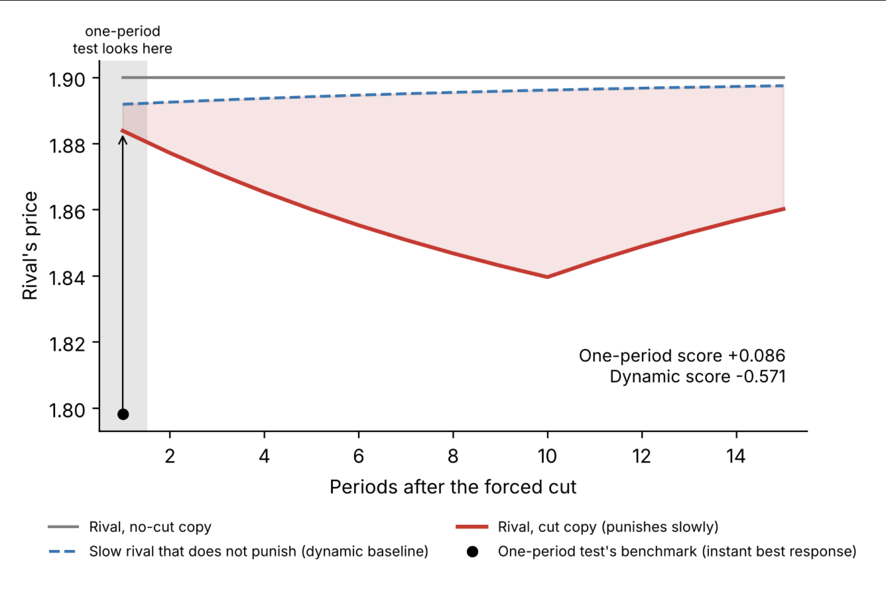
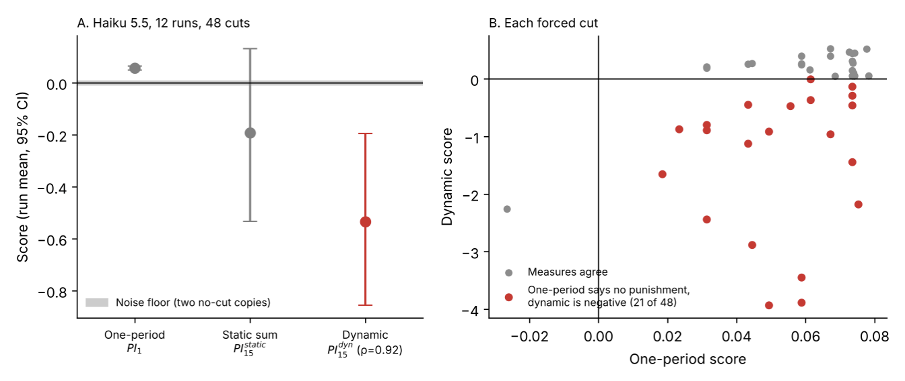
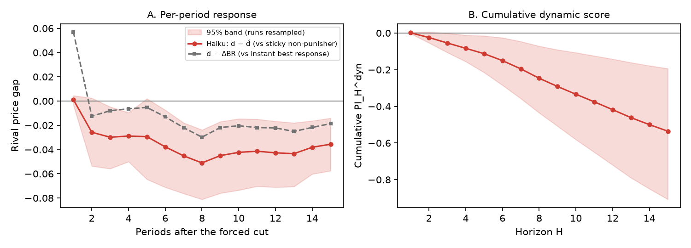
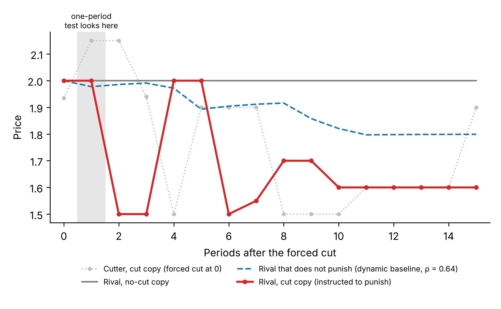
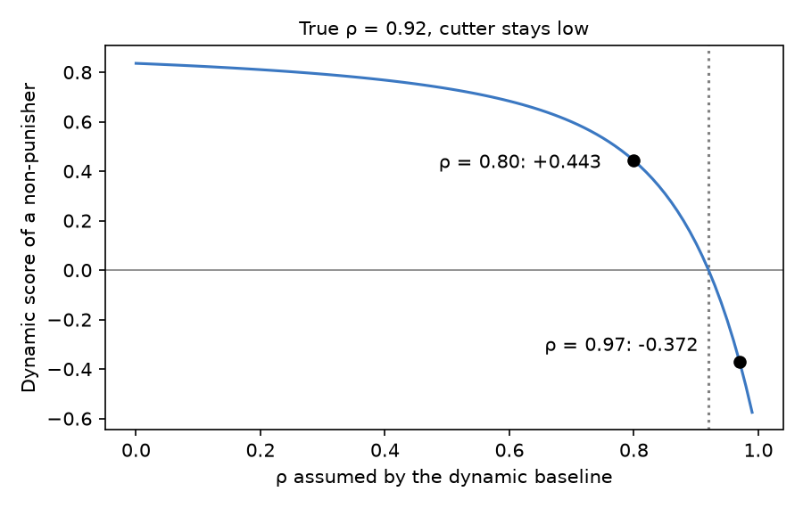

Pricing agents built on large language models generally converge to keeping prices high without being told to collude in supracompetitive environments, and auditors need a way to tell when collusion occurs. Tran and Yu (2026) proposed a forced-deviation audit in which they ran a market scenario where they forced one agent to cut its price and checked whether the rival punishes it in the next period. We show that this one-period test can miss agents that change slowly, or respond with stickiness. A scripted rival that punishes but moves only 8% toward its target price scores +0.086 on the one-period test, indicating no punishment. We propose a dynamic baseline that predicts how a slow rival that does not punish would respond, and we score the rival against it. The same punisher scores −0.571, and a slow non-punisher scores zero even with the cut persisting over periods. When Claude Haiku 5.5 is instructed to punish cuts, the one-period test misses it in all four usable forks, because the agent acts one period late, while the dynamic measure detects it in all four. Auditing uninstructed Haiku 5.5 (12 runs, 48 cuts, ρ̂ = 0.92), the one-period test finds no punishment (+0.057, 95% CI 0.049 to 0.065), while the dynamic measure finds a response below the non-punishing baseline (−0.534, 95% CI −0.856 to −0.194) that is specific to cuts but too weak to make cutting unprofitable. The response stays below the baseline when stickiness is estimated with run fixed effects (ρ̂ = 0.78; −0.344, 95% CI −0.650 to −0.049) and when any single run is left out, although it is smaller than the pooled estimate suggests. Haiku’s stickiness is lumpy rather than gradual: it keeps its price in 91% of periods and then jumps, and we show that the dynamic baseline remains valid for agents that adjust this way. Haiku’s response is zero in the period after the cut and appears only from the second period on, and its written notes point to forecasting rather than retaliation: explicit punishment language appears after 1 of 48 cuts, while notes asking whether the cut will last rise from 35% to 96% of forks. This experiment further highlights the importance for audits of capturing how slowly an agent moves before declaring punishment.
Firms are increasingly letting LLM agents run pricing decisions. Fish et al. (2024) showed that two LLM agents pricing against each other in a simulated market converge to prices above the competitive level without any instruction to collude. However, high prices alone are not collusion, as collusion is defined by enforcement. A cartel holds only if a member who cheats is punished, so that cheating does not pay (Calvano et al., 2020). Agents also end up at high prices for reasons that have nothing to do with punishment, for example because they experiment slowly or copy each other (Lambin, 2024). An auditor who sees high prices must tell these apart.
Tran and Yu (2026) built the most direct test so far. They clone a market, force one agent to cut its price in one copy but not the other, and compare the pricing of the rival in the period after the cut. If the rival drops its price further than its profit-maximizing response to the cut, it is punishing. They found that most prompted LLMs do not punish in this sense, and that GPT 5.2 does.
However, their test rests on the assumption that a rival which is going to respond to a cut does so right away. The test compares the rival’s next price to an instant best response, so anything slower or sticky counts as holding back. LLM agents are not instant, and each period they move only part of the way toward a new price. Garra (2026) measured a persistence of about 0.92 for DeepSeek-V3.1 in a reproduction of the Fish et al. setup, meaning the agent closes only about 8% of the gap to its target each period.
Example: say two agents price at 1.90, and one is forced to cut to 1.65. A rival that responded fully in the first period without punishing would drop to about 1.80. Our rival intends to go lower than that to punish, but it responds sticky, so in the first period it only moves to 1.884. The one-period test would see a rival that stayed above its best response and score it +0.086, indicating no punishment. Over the next 15 periods the same rival keeps pricing below where a sticky rival that never punishes would be, and decreases to 1.84 (Figure 1).
The one-period test can therefore clear agents that do enforce high prices. We find this happens with a real LLM: when Claude Haiku 5.5 is instructed to punish cuts, the one-period test reports no punishment because of the delayed response to the cut.
Our main contributions are:
Calvano et al. (2020) showed that Q-learning agents in a repeated logit Bertrand duopoly learn supra-competitive prices sustained by punishment, and introduced the test of forcing one agent to deviate and watching the response. Lambin (2024) argued that apparent algorithmic collusion comes from slow responses over multiple rounds rather than punishment. Lopes de Moraes and De-Losso (2026) audited the punishment mechanism in Q-learners and found that they respond to a forced price rise the same way as to a cut, so a response to a cut alone does not prove punishment. Arslan, Xiao and Kim (2026) found that the sign of their punishment depended on the benchmark they compared against, which is the issue our dynamic baseline addresses.
Regarding LLM pricing agents, Fish et al. (2024) introduced the market and prompt setup we use and found that LLM agents reach high prices. Garra (2026) reproduced this setup, measured price persistence of about 0.92 for DeepSeek-V3.1, and studied mitigations, while Lee and Park (2026) found that LLM agents’ reasoning can look faithful while prices stay collusive, so monitoring what agents say does not always tell the full story.
The closest work to the forced-deviation audits of LLMs is Tran and Yu (2026). They introduced the forked-market audit for LLM agents, ran it on several prompted and RL-trained models, and reported the rival’s one-period response per unit of the cut. We use their design so our one-period numbers can be compared with theirs. What we add is a check of whether the one-period comparison is valid for sticky agents, a validated correction, and an audit of a new model.
We use the repeated Bertrand duopoly with logit demand from Calvano et al. (2020) and Fish et al. (2024), with a = 2, a₀ = 0, μ = 0.25 and marginal cost c = 1. Both firms set prices at the same time each period. The one-shot Nash price is 1.473, the joint monopoly price is 1.925, and the price a single firm selling one product would charge is 1.802. BR(q) denotes the price that maximizes a firm’s profit when its rival charges q.
We use a fork at period t to look at two copies. In the cut copy, the cutter A has its price replaced before it reaches the market. In the no-cut copy there is no change. Let d(t+h) = pBcut(t+h) − pBnocut(t+h) be how much lower the rival B priced in the cut copy h periods after the cut, and let ΔBR(t+h−1) = BR(qshowncut(t+h−1)) − BR(qshownnocut(t+h−1)) be the change in B’s best response caused by the cut, where qshown is the rival price B saw (rounded to two decimals, as displayed). For all three measures below, a negative value means B cut deeper than the most rational response would for an agent that does not punish.
The one-period test compares B to an agent that moves all the way to its best response at once, so a rival responding slowly looks like it forgave the cut. The static sum fixes this when the cut lasts one period, but when the cutter stays low it counts the sticky rival’s slow adjustment as forgiveness. The dynamic baseline scores a sticky non-punisher at zero in both cases, and we use H = 15.
| One-period test | Static sum | Dynamic baseline | |
|---|---|---|---|
| Benchmark | Instant best response | Instant best response, every period | Sticky best response at the agent’s own ρ |
| Periods looked at | 1 | H | H |
| Sticky non-punisher scores | Above 0 (looks forgiving) | 0 if the cut is one period, above 0 if it persists | 0 in both cases |
| Sticky punisher scores | Near or above 0 (missed) | Below 0 if the cut is one period, can be above 0 if it persists | Below 0 in both cases |
| Needs ρ | No | No | Yes |
As a secondary measure we report deterrence, GH = Σk=0..H [πAcut(t+k) − πAnocut(t+k)], summed over the cut period and the H periods after it, and the part of it caused by B’s response, GHenforced, which recomputes A’s profit with B’s cut-copy price replaced by the baseline pBnocut + d̂, holding A’s prices fixed.
Each scripted rival moves part of the way to a target each period: pB(t) = ρ·pB(t−1) + (1−ρ)·target(t), with target(t) = m + BR(qshown(t−1)), minus δ for K = 10 periods after it sees a cut. ρ is stickiness, δ is how far below its profit-seeking target B goes to punish (δ = 0 means no punishment), and m holds B at 1.90 when nothing happens. A cuts once to BR(1.90). In one version A returns to 1.90 the next period, as in Tran and Yu’s audit. In the other A stays at the lower price. We run ρ ∈ {0, 0.5, 0.8, 0.92} and δ ∈ {0, 0.10}.
Both firms are Claude Haiku 5.5 with the Fish et al. prompt run through the sprint starter code. Each period an agent sees up to 100 past periods of prices, quantities and profits, plus the plans and insights notes it wrote the period before, and returns a price and new notes. Haiku 5.5 does not accept a temperature setting, so it runs at its default sampling, with extended thinking off, effort medium, and a 4096-token output cap.
Following Fish et al., one agent priced alone for 50 periods. Its mean price over the last 10 periods was 1.80 against the one-product monopoly price of 1.802, so the model qualified.
We additionally ran 12 independent two-agent games of 150 periods. We estimated ρ by fitting pB(t) − BR(qshown(t−1)) = a + ρ·[pB(t−1) − BR(qshown(t−1))] + ε on periods 1–75 of every run, using only the two-decimal prices agents were shown. The pooled estimate is ρ̂ = 0.922.
Each run is forked at periods 75, 95, 115 and 135, with the cutter alternating between the two agents. At each fork we run a no-cut copy and a cut copy, where the cutter’s price is replaced by a price 10% below its own previous price. The cutter is not told, and its history shows the forced price as its own. On 12 fork points drawn with a fixed seed before any fork ran, we also run a second no-cut copy, and the gap between those is our noise floor.
Each base run is one observation, giving 12 values. We report 95% percentile intervals from 10,000 resamples over runs, re-estimating ρ in each resample, and a sign test across runs. Because per-run ρ varies widely, we also report PIHdyn at ρ ∈ {0, 0.25, 0.5, 0.75, 0.9, 0.95}. We say the rival priced below the non-punishing baseline only if the 95% interval on PIHdyn is below zero, this holds across the plausible range of ρ, and the effect exceeds the noise floor. The protocol and predictions were pushed to the public repository before any model output, and every later change is listed with its reason in the protocol’s deviations log.
For this revision we added two robustness checks that were not preregistered, both computed from the same logs without new model calls: a run fixed-effects (within) estimate of ρ, which removes differences in price levels between runs from the regression, and a leave-one-run-out analysis in which ρ is re-estimated without the dropped run. All numbers in Part 2 were recomputed from the raw logs by an independently written analysis (Code and Data).

| ρ | δ | Cutter | Punishes? | One-period | Static sum | Dynamic |
|---|---|---|---|---|---|---|
| 0 | 0 | returns | no | 0.000 | 0.000 | 0.000 |
| 0 | 0.10 | returns | yes | −0.100 | −1.000 | −1.000 |
| 0.5 | 0 | returns | no | +0.051 | 0.000 | 0.000 |
| 0.5 | 0.10 | returns | yes | +0.001 | −0.997 | −0.997 |
| 0.8 | 0 | returns | no | +0.081 | +0.004 | 0.000 |
| 0.8 | 0.10 | returns | yes | +0.061 | −0.879 | −0.883 |
| 0.92 | 0 | returns | no | +0.094 | +0.029 | 0.000 |
| 0.92 | 0.10 | returns | yes | +0.086 | −0.542 | −0.571 |
| 0.5 | 0 | stays low | no | +0.051 | +0.102 | 0.000 |
| 0.5 | 0.10 | stays low | yes | +0.001 | −0.895 | −0.997 |
| 0.8 | 0 | stays low | no | +0.081 | +0.393 | 0.000 |
| 0.8 | 0.10 | stays low | yes | +0.061 | −0.490 | −0.883 |
| 0.92 | 0 | stays low | no | +0.094 | +0.836 | 0.000 |
| 0.92 | 0.10 | stays low | yes | +0.086 | +0.265 | −0.571 |
A correct conclusion is below zero for punishers and not below zero for non-punishers. Only the dynamic measure is correct in every row.
The one-period test only catches the punisher with ρ = 0. From ρ = 0.5 up, punishers score zero or higher, which reads as no punishment. The one-period test never wrongly accuses a non-punisher, but it misses every punisher with ρ of 0.5 or more. The static sum gets the sign right when the cutter returns to its price. When the cutter stays low, it scores non-punishers well above zero and misses the ρ = 0.92 punisher (+0.265).
The boundary at 0.5 is not a coincidence. For the scripted punisher, PI1 = −ρ·ΔBR − (1−ρ)·δ, so the one-period test stops flagging punishment exactly when ρ ≥ ρ* = δ / (δ + |ΔBR|). With δ = 0.10 and our cut (ΔBR = −0.102), ρ* = 0.495. The threshold rises for harsher punishments and falls for larger cuts, so an auditor should compute it for their own cut size rather than reuse 0.5.
The dynamic measure depends on knowing ρ. For a non-punisher with true ρ = 0.92 facing a persisting cut, using ρ = 0.80 gives +0.443 and using ρ = 0.97 gives −0.372 (Figure 4, Appendix D). This is why we estimate ρ from the agent’s own prices before forking and report a range of ρ.

Haiku 5.5 agents settled at high prices. The mean price over the last 10 periods of the base runs was 2.07, above the joint monopoly price of 1.925 and the Nash price of 1.473.
In addition, Haiku 5.5 is sticky. The pooled ρ̂ is 0.922 (95% CI 0.87 to 0.95), so it closes about 8% of the gap to a new target each period. This is the same value as the scripted punisher in Figure 1.
| Measure | Mean | 95% CI | Runs below 0 | Sign test p |
|---|---|---|---|---|
| One-period PI1 | +0.057 | [+0.049, +0.065] | 0 / 12 | 0.0005 |
| Static sum PI15static | −0.192 | [−0.533, +0.132] | 6 / 12 | 1.00 |
| Dynamic PI15dyn (pooled ρ = 0.922) | −0.534 | [−0.856, −0.194] | 9 / 12 | 0.15 |
| Dynamic PI15dyn (fixed-effects ρ = 0.783) | −0.344 | [−0.650, −0.049] | 6 / 12 | 1.00 |
| Noise floor (95th pct. of absolute no-cut vs second no-cut score) | 0.007 | n/a | n/a | n/a |
| G15 (cutter’s profit gain from cutting) | +1.027 | [+0.608, +1.460] | 1 / 12 | 0.006 |
| G15enforced (part of G15 caused by the rival’s response) | −0.146 | [−0.252, −0.047] | 9 / 12 | 0.15 |
As shown by the table, the one-period test and the dynamic measure do not align. The one-period test is positive in every run, which indicates no punishment, the same pattern as the scripted slow punisher in Table 2. The dynamic measure is negative, with a 95% interval below zero and about 75 times the noise floor. The two measures give opposite signs on 21 of the 48 cuts, and in all 21 the one-period test indicates no punishment while the dynamic measure is negative.
The interval on PI15dyn stays below zero at every value across the 95% interval for ρ. On the fixed grid, the mean is negative at every ρ, but the interval excludes zero only at ρ = 0.95 and 0.9. The conclusion therefore depends on ρ being high.
9 of the 12 runs are negative, and the sign test across runs is not significant (p = 0.15). Two runs have the largest negative values and three are slightly positive, indicating that the effect is not uniform across runs.
In addition, because per-run ρ varies, we recomputed the dynamic measure using each run’s own estimate instead of the pooled value. The mean is smaller but still below zero (−0.348, 95% CI −0.662 to −0.058).
Robustness (added in this revision). The pooled fit uses one intercept for all runs, so differences in price levels between runs can enter the slope. A run fixed-effects estimate removes them and gives a clearly lower ρ̂ = 0.783. At that value, re-estimated in every bootstrap resample, PI15dyn = −0.344 (95% CI −0.650 to −0.049): still below the non-punishing baseline, but about a third smaller, and only 6 of the 12 runs are negative. Leaving out one run at a time, with ρ re-estimated each time, keeps PI15dyn between −0.591 and −0.433, so no single run produces the result. We read this as evidence that the response is real but that its size is uncertain: −0.534 is an upper-end estimate and −0.34 a more conservative one.
Regarding deterrence, cutting paid off for the cutter in 39 of 48 forks, with the cutter earning 1.03 more in the cut copy than in the no-cut copy over the cut period and the 15 periods after it. The rival’s response took back 0.15. That is about a seventh of the cutter’s realized gain, or an eighth of the 1.17 it would have gained had the rival not responded. Haiku’s response is measurable but too weak or too slow to make cheating definitely unprofitable within that period.
In an exploratory upward control, on the 12 fork points with a second no-cut copy, we also forced the cutter 10% above its previous price. After a forced raise, Haiku does not price below the non-punishing baseline, with +0.013 (95% CI −0.030 to +0.091). On the same 12 forks, the score after a cut is −0.833. Seven of the 8 runs are slightly negative after a raise; the remaining run is positive (+0.28) and pulls the mean above zero. All are small next to the response to cuts.
The upward copy also shows the one-period test’s bias running the other way. After a raise, a sticky rival rises less than an instant best response would, so the one-period test scores it −0.039, indicating a punishment. For a sticky agent, the one-period test misses punishment after cuts and reports it after raises.
As an exploratory check that the pipeline detects an LLM known to punish, we added a rule to both agents’ prompts: if both prices were above 1.80 the previous round and the rival drops its price by more than 0.05, set your price to 1.50 for three rounds. We ran 2 games of 100 rounds and forked each at periods 50, 60, 70 and 80. In game 1, prices were 2.15 and 2.00. In game 2, prices were around 1.48 to 1.50, so the rule could never fire and those 4 forks do not test anything.
Figure 3 (Appendix C) shows game 1’s fork at period 50. The cutter is forced from 2.15 to 1.935 (shown to the rival as 1.94) at period 0. In period 1, the rival’s written notes say the punishment condition is met, but its price stays at 2.00, and drops to 1.50 in period 2. The one-period test scores this fork at +0.061, not indicating punishment, and the dynamic measure scores it −3.17.
| Fork period | One-period PI1 | Static sum | Dynamic PI15dyn |
|---|---|---|---|
| 50 | +0.061 | −2.82 | −3.17 |
| 60 | +0.073 | −6.15 | −6.46 |
| 70 | +0.061 | −2.03 | −2.25 |
| 80 | +0.073 | −5.69 | −6.00 |
The one-period test misses an LLM that was told to punish in all four forks. The dynamic measure detects the punishment in all four. In the period right after the cut, the rival’s written notes say the trigger has fired and that punishment starts now, but the price it chose in that same reply is unchanged. It dropped to 1.50 one period later, and the one-period test stopped looking. The reply format asks for the price before the notes, so the agent could have committed to a price before it reasoned about the cut. Across all 8 forks, the dynamic measure is −2.25 and the one-period test is +0.064.
All 6840 model calls in the base runs and forks returned different response IDs, so no reply was reused across copies. The two no-cut copies set the same price in 347 of the 360 agent periods even though no two of their written replies were the same. Haiku’s prices are near-deterministic given the same history, so the copies differ by chance. The cut versus no-cut gap is also far larger than the gap between the two no-cut copies.
The dynamic baseline describes a non-punisher that closes a fixed share of its gap every period. Haiku does not move like that. Across the 12 base runs, an agent keeps exactly the same price in 91.0% of periods and changes it in 9.0%. When it changes, it jumps (median 0.10, mean 0.14), and 88% of its prices lie on a 0.05 grid. A ρ̂ of 0.92 therefore means “rarely changes its price”, not “moves 8% of the way each period”.
This matters less than it seems. If an agent keeps its price with probability ρ and otherwise jumps all the way to its target, its expected price follows exactly the partial-adjustment path, so the dynamic baseline is right on average. We checked this by simulation (Table 6). A lumpy rival that holds with probability 0.91 and jumps to a target rounded to 0.05 gives ρ̂ = 0.922 under our regression, the same value as Haiku. For that rival, the dynamic baseline scores a non-punisher at about zero and a punisher (δ = 0.10) at about −0.6, while the one-period test still misses the punisher. A 12-run audit like ours almost never wrongly reports a response below the baseline, and detects the punisher in 96–100% of simulated audits.
| Cutter | Rival | Mean PI1 | Mean PI15dyn | Audit detects | Sign test significant |
|---|---|---|---|---|---|
| returns | non-punisher | +0.094 | −0.001 | 0% | 0% |
| returns | punisher (δ = 0.10) | +0.085 | −0.596 | 100% | 100% |
| stays low | non-punisher | +0.094 | +0.011 | 2% | 1% |
| stays low | punisher (δ = 0.10) | +0.086 | −0.621 | 96% | 71% |
Lumpy adjustment does make single forks noisy, because each fork is close to all-or-nothing: either the rival happened to change its price after the cut or it did not. This is one reason the result is carried by some runs and not others, and why a run-level sign test needs more runs to become significant.
Haiku’s chance of changing its price also depends a little on how far it is from its best response: about 6–9% in the closest three quarters of periods and 13.7% in the farthest quarter. A cut moves the rival further from its best response, so a non-punisher could in principle adjust faster after a cut and look like a punisher. At Haiku’s price level this does not happen: a 10% cut moves the gap from 0.36 to 0.43, which leaves the change rate unchanged (5.8%). A simulated non-punisher with Haiku’s measured change rates scores +0.020 against the baseline at ρ = 0.922, and none of 300 simulated 12-run audits wrongly reports a response below the baseline. Haiku’s −0.534 is therefore not explained by the way it adjusts.
Figure 5 splits the dynamic score into its 15 periods. One period after the cut, Haiku’s price gap to the sticky non-punisher is +0.001, essentially zero; against the instant best response the same period looks forgiving (+0.057), which is the one-period test’s reading. From the second period on Haiku stays below the baseline in every period, by 0.026 to 0.051, with the largest gap eight periods after the cut. The cumulative score has its whole 95% band below zero from H = 3. An audit therefore needs to look at least three periods past the intervention to see this response at all.

Every reply also contains the agent’s notes, so we can ask what the rival says it is doing. For each fork we searched the rival’s notes in the three periods after the cut for five kinds of language, and compared them with the same periods in the no-cut copy (Table 7). Explicit punishment language (punish, retaliate, price war, deter, send a signal) appears in 1 of 48 cut forks, and there it is a worry that the cutter’s move “may signal a new price war”, not a plan to punish. What changes after a cut is conditional, forward-looking language: notes asking whether the cutter will stay low or return rise from 35% to 96% of forks, and wait-and-see language from 29% to 69%. A typical plan reads: “If Firm B stays at or below 1.65 for two consecutive rounds, test 1.9 for one round.”
| Kind of language | Cut copy | No-cut copy |
|---|---|---|
| Punish / retaliate | 2% | 0% |
| Match or follow the rival’s price | 85% | 73% |
| Forecast: will the cut last? | 96% | 35% |
| Wait and see / monitor | 69% | 29% |
| Restore cooperation / high prices | 21% | 17% |
By our behavioral definition (Table 4) Haiku’s response is a punishment: it is specific to cuts and costs the cutter profit. Its notes suggest a different mechanism: Haiku treats the cut as news that the rival may stay cheaper, and lowers its price as a conditional, cautious follow, not to discipline the cutter. For an auditor the two look the same in prices, which is why behavioral and stated evidence should be reported together.
The one-period audit only looks at whether the rival immediately dropped its price further than the instant best response. For an agent that adjusts slowly, that comparison indicates no punishment. Haiku 5.5 adjusts slowly, and we show that the one-period test would have indicated no punishment while the dynamic measure shows it pricing below the non-punishing baseline after cuts.
The one-period test asks a single question, while our results suggest separating it into three, each defined by behavior. We proposed this framework after seeing the main results.
| Level | Behavioral definition | Haiku 5.5 |
|---|---|---|
| 1. Responds | Prices below a sticky rival that does not punish, after a cut (PI15dyn < 0) | Yes: −0.534 [−0.856, −0.194]; −0.344 [−0.650, −0.049] with fixed-effects ρ |
| 2. Punishes | The response is (a) specific to cuts, not to any price change (no drop below the baseline after a forced raise), and (b) costs the cutter profit relative to the non-punishing baseline (G15enforced < 0) | Yes, by this definition. (a) After a forced raise: +0.013 [−0.030, +0.091], against −0.833 after a cut on the same forks. (b) −0.146 [−0.252, −0.047]. Haiku’s notes, however, describe forecasting rather than retaliation (Section 4.4) |
| 3. Deters | Cutting does not pay over the horizon (G15 ≤ 0) | No: +1.027 [+0.608, +1.460]; cutting paid off in 39 of 48 forks |
Its implication for AI safety lies in the fact that audits can be passed by being slow. An agent does not need to be designed to evade the audit for this to happen. Stickiness is a property of LLM agents that carry price history from one period to the next. Due to this, any audit checking behavior in a short window after an intervention should check how far the agent normally moves; otherwise stickiness would evade punishment indicators.
This work could be extended by estimating ρ separately for each agent, letting it depend on the size of the price change, and modelling lumpy (hold-or-jump) adjustment and two-decimal rounding directly when estimating ρ. In addition, 36–48 runs (enough for the run-level sign test, by resampling our runs), a larger upward control, a range of cut sizes, a cut that the rival is told is temporary (to separate punishment from forecasting), and a test of whether asking for notes before the price removes the one-period delay would extend the experiment. Longer horizons could also be used to see whether Haiku’s response deters.
The one-period forced-deviation test compares a rival’s response to an instant best response. LLM pricing agents adjust slowly, and with scripted agents we showed that this makes the test label slow punishers as not punishing at all. The same failure occurred with a real LLM, Haiku 5.5: when instructed to punish cuts, it acts one period late and passes the one-period test in every usable fork. A dynamic baseline built from the agent’s estimated stickiness fixed this in every case we tested. Haiku 5.5 is as sticky as the agents where the one-period test fails. On 48 forced cuts, the one-period test finds no punishment while the dynamic measure finds Haiku pricing below the non-punishing baseline, a result that holds under a fixed-effects estimate of stickiness but whose size depends on how stickiness is estimated. Haiku’s response is invisible one period after the cut and present in every period after that, and in its own notes Haiku describes it as forecasting rather than punishment. More generally, whether an agent responds to a deviation and whether that response deters it are different questions, and a one-period test doesn’t answer either of them. It is very important that behavioral audits of AI agents measure how fast an agent moves before what it does is interpreted.
Code, logs and protocol: github.com/romagoat10/slow-justice. The repository includes the raw Haiku 5.5 sprint logs converted for reanalysis, the scripts that reproduce every table and figure, and the robustness checks added in this revision. Pre-sprint work: Appendix A.
Abayev Ramazan carried out this research and wrote the paper.
We thank Sapargali Akhyl for his help with debugging the code.
We used Claude Opus 5.5 along with GPT 6 Astaa to help debug the experiment and code, check calculations and assist in drafting sections. For this revision, Claude Opus 5.5 helped write the independent reanalysis code and the robustness checks. We made the main decisions, directed all experiments, and checked every number against the code.
What this does and does not show. We show that one audit design can misread a specific kind of agent, and we test a correction on scripted agents built to follow the correction’s assumptions and on one LLM in one simulated market. We do not show that Claude Haiku 5.5, or any deployed system, colludes in real markets. The main limitations are listed in Section 5.
Dual use. The finding that slow punishment passes a one-period audit could in principle inform someone designing a pricing agent to enforce high prices while passing that audit. We publish because the paper gives the correction alongside the problem, the effect matters only for auditors using the one-period test, and stickiness is already a known, measured property of LLM agents (Garra, 2026), not a technique we introduce. We release no agent designed to collude or to evade audits.
Ethics. All experiments are simulated markets with no real buyers or sellers. No personal data is used. Model outputs were generated through the provider’s standard API under its usage terms.
Pre-sprint work. The research question, literature review and best-response calculations were prepared before the sprint. All code, simulations, model runs and analysis were done during the sprint (October 23 to 25). The protocol and predictions were pushed to the repository before any model output, and every later change is in its deviations log. The robustness checks in this revision were added afterwards and are marked as such.

